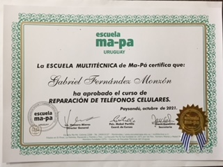

¡Hola! mi nombre es Gabriel Fernandez, vivo en Paysandú, Uruguay y desde el año 2021 soy técnico en reparación de celulares.
Además, tengo práctica y conocimientos en electricidad y electrónica. Me dedico a arreglar desde celulares hasta microondas y todo aquello que contenga circuitos eléctricos o electrónicos.
A modo de generar la confianza suficiente en mis clientes, también para que tengan una idea de las cosas que reparo, para que vean una lista de precios frecuentes o incluso que conozcan mi modaliad de trabajo, he creado este sitio web.
Cuando mis clientes se encuentran en Paysandú habitualmente ellos traen su artefacto a mi local para que yo proceda con mi trabajo. En caso de ellos no poder, coordinan conmigo y yo me aproximo.